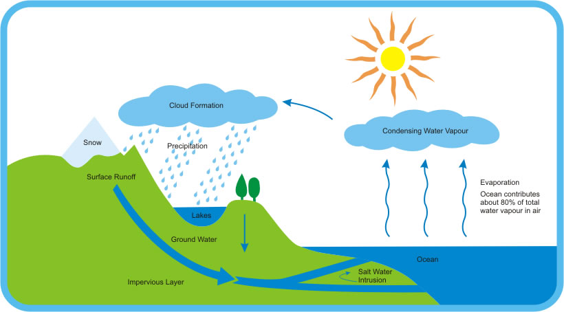

My Future School | Revolutionary Digital Learning Platform
Water Cycle
Diagrams & Flow charts:

Theory & Explanation:
What is the Water Cycle?
The water cycle is a way that water moves all around the Earth. It never stops and doesn't really have a beginning or an end.
It's like a big circle. We'll describe it by starting with water that's on land.
For example, water in the ocean or a lake. Some water on the surface of the ocean will evaporate due to heat from the sun. When it evaporates it turns into vapor water and goes up into the atmosphere. This vapor water gets together with a lot of other vapor water and turns into clouds.
Clouds move about the earth with the weather and once they are so full of water they drop the water to Earth in some form of precipitation. It could be rain, snow, sleet, or hail. When the water hits the earth it may fall right back into the ocean or feed a flower or be snow on the top of a mountain. Eventually this water will evaporate and start the whole cycle again.
How water goes from land to vapor in the atmosphere
There are three main ways that water on land turns into vapor:
Evaporation - This is the main process by which water goes from the ground to vapor in the atmosphere. Around 90 percent of the water vapor in the atmosphere got there through evaporation. Evaporation takes place only on the water's surface. It takes energy in the form of heat. Hot water will evaporate more easily than cold water. The sun provides a lot of the energy for evaporation in the water cycle, primarily causing evaporation from the surface of the ocean.
Sublimation - This is when water moves directly to vapor from ice or snow without ever melting into water. Good conditions for sublimation to occur is when ice or snow is in very cold conditions, but it is windy and the sun is shining.
Transpiration - Transpiration is when plants release water on to their leaves that then evaporates into vapor. Plants will release a lot of water as they grow. Around 10 percent of the water vapor in the atmosphere is estimated to come from transpiration. Water in the atmosphere We see water in the atmosphere in the form of clouds. There is a small amount of water even in clear skies, but clouds are where water has started to condense.
Condensation is the process of water vapor becoming liquid water.
Condensation is a major step in the water cycle. The atmosphere helps to move water around the world. It takes water that evaporated from the ocean and moves it over land where clouds and storms form to water plants with rain.
Precipitation- Precipitation is when water falls from the atmosphere back to land. Once enough water gathers in a cloud droplets of water will form and fall to the earth. Depending on the temperature and weather this could be rain, snow, sleet, or even hail. Water storage A lot of the Earth's water does not take part in the water cycle very often., Much of it is stored. The Earth stores water in a number of places. The ocean is the largest storage of water. Around 96 percent of the Earth's water is stored in the ocean. We can't drink the salty ocean water, so fortunately for us, freshwater is also stored in lakes, glaciers, snow caps, rivers, and below the ground in ground water storage.